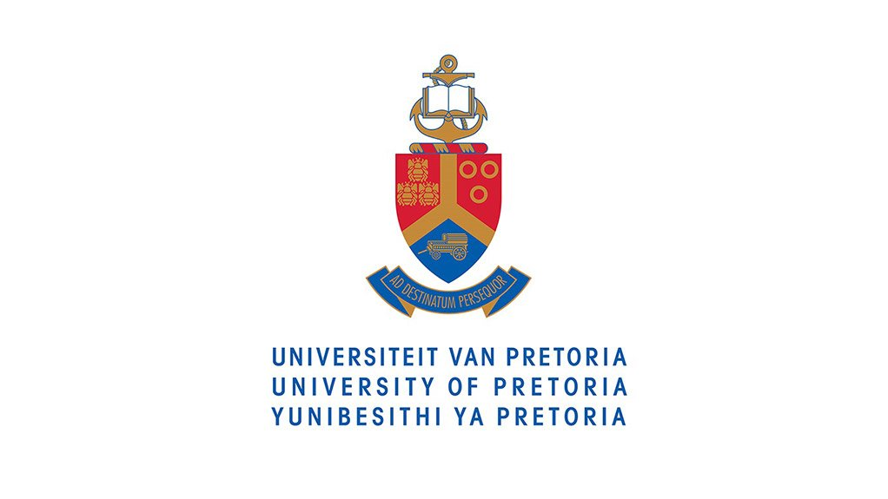
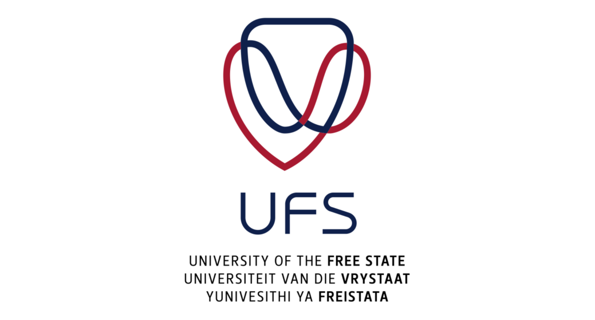
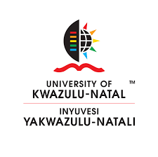
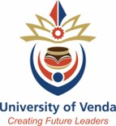

Tap a section heading to expand or collapse its speakers.

Mr. James Motladiile
Professional Engineer with the Engineering Council of South Africa (ECSA), Fellow, Council Member, and Senior Vice President of the South African Institute of Electrical Engineers (SAIEE).
Keynote address

Mr. Thembinkosi Madikane
President — Engineering Council of South Africa (ECSA)
Keynote address

Mr. Thomas Lee
CTO & Co-Founder — Compound Bridge (African AI infrastructure advisory & integration)
Keynote address

Dr Mathews Phosa
Chairperson — Agricultural Development Agency (ADGA)
Keynote address

Professor Chris Roth
President — South African Institution of Civil Engineering (SAICE)
Keynote address

Prof. Piet Croucamp
Teacher for Political Studies at North-West University (NWU)
Guest Speaker for the Gala Dinner

Ms. Newrene Klaaste
MEC for Agriculture, Environment Affairs, Rural Development & Land Reform — Northern Cape
Official Address at the Gala Dinner

Mrs. Chikondi Gurira
Master of Ceremonies — Gala Dinner
Gala Dinner programme host
Mr. Mxanxathi Mabadi
Vice-President of the South African Institute of Agricultural Engineers (SAIAE)
MC Welcome
Mr. Pranesh Moodley
President of the South African Institute of Agricultural Engineers (SAIAE)
Welcome Address
Mr. Mfundo Hlatshwayo
Presenter 1
The use of Agri-mats in addressing irrigation water demand and soil water evaporation in selected Agri-Parks
Dr. Macdex Mutema
Presenter 2
Transmission water losses at South African irrigation schemes: Is it a crisis?
Dr. Dayton Tagwi
Presenter 3
The Development of an Empirical Equation for Determining Minor Losses Due to Bends in Smooth Pipes for Irrigation System Design
Dr. Freddy Rabothata
Presenter 4
Assessment of waterlogging and salinity in Ganspan plots of the Vaalharts Irrigation Scheme: Preliminary Findings

Mr. Natalian Mamogobo
Presenter 5
Integrating Agricultural Water Management and Soil Functionality in Farmer-Led Irrigation Development Systems in South Africa
Ms. Perm Mthethwa
Presenter 6
Enhancing Food Security Through Low-Cost and Energy-Efficient Postharvest Preservation Technologies
Prof. Alwyn Hoffman
Presenter 7
Intelligent Crop Management based on Machine Learning applied to UAV data
Ms. Anrè Stannard
Presenter 8
Two-way traceability system for supply chain management on a Rooibos farm
Ms. Elchane Lombaard
Presenter 9
Optimising post-harvest operations to reduce heat-exposure time and enhance strawberry shelf life using lean principles
Ms. Phalane Lebotsa
Presenter 10
Non-destructive Assessment of Citrus Internal Quality Attributes Using X-ray Computed Tomography and Near Infrared Spectroscopy
Ms. Sana Jina
Presenter 11
An Integrated Decision-Support Framework for the Conversion of Irrigation Canals to Pressurised Pipeline Systems
Prof. Jeff Smithers
Presenter 12
Improved Design Flood Estimation in South Africa
Mr. Sandile Dladla
Presenter 13
From Dependence to Design: Uncertainty Propagation in Copula-Based Multivariate Flood Frequency Analysis
Dr. Francis Onyando
Presenter 14
A Novel Wireless Clamp-On Tractor Instrumentation System for Determining Tractor Draft Energy Requirements: Development, Calibration, and Field Validation
Dr. Tingmin Yu
Presenter 15
Baseline Study through Questionnaire Survey on Mechanisation Requirements of Small-Scale Conservation Agriculture Farmers in Mpumalanga Province
Mr. Thapelo Ramphisa
Presenter 16
Design, construction, and testing of a smart herbicide sprayer for small-scale soybean farmers
Mr. Stefaans Erasmus
SAIAE Branch Chairperson
Welcome Address
Dr. Mxolisi Mukhawana
Presenter 17
Towards the Development of a National Digitalized Integrated Water and Sanitation Monitoring System in South Africa

Mr. Benard Chirende
Presenter 18
Water Availability Status in the Sabie-Crocodile Water Supply System in the Inkomati-Usuthu Water Management Area
Mr. Tendayi Makombe
Presenter 19
Water Availability Assessment Study for the Kouga and Kromme catchment in the Algoa Water Supply system
Mr. Aden Myburgh
Presenter 20
Towards an Integrated Engineering Framework for Bio-Pond Wastewater Performance: From Field Diagnosis to Algal Process Optimisation
Mr. Luckson Machingambi
Presenter 21
Water Savings in agriculture in the context of declining water resources availability in the Orange-Senqu Basin

Mr. Oratile Selatlhedi
Presenter 22
Towards a Relocatable Private 5G Network for Remote Rural Smart Agriculture

Mr. Lourens van der Merwe
Presenter 23
An IoT Node for Major Leak Detection and Curtailment in Farm Water Pipelines

Mr. Anele Sidzumo
Presenter 24
Towards physiology-based precision irrigation under a changing climate: diurnal leaf, stem and fruit water potential in pear orchards
Mr. Louis Lagrange
Presenter 25
Energy Management (South African Energy Performance Certificate (EPC) Legislation)
Ms. Rolinda van Emmenis
Presenter 26
Improving the accuracy and reliability of diesel inventory data at a grain silo organisation

Mr. Harmen Potgieter
Presenter 27
Real-time cattle identification using deep vision models
Mr. Lloyd Hansmeyer
Presenter 28
Evaluating Rainwater Harvesting Design Tools Against Measured Field Data Across South African Climatic Regions
Ms. Rachel van Zyl
Presenter 29
Roof Runoff Behaviour under Low-Intensity Rainfall: Implications for On-Farm Rainwater Harvesting Design

Mr. Amico Eybers
Presenter 30
Understanding Climate-Induced Variability in Roof Runoff for Improved Rainwater Harvesting Design

Mr. Gert Meiring
Presenter 31
Constructed Wetlands for Wastewater Treatment on Farms

Mr. Pierre Storey
Presenter 32
Dams - Protect Your Invaluable Asset
Mr. Corne Roberts
Presenter 33
Structured Decision Support for Wildfire Response

Mr. Grant Jepthas
Presenter 34
Climate Change Impacts on River Systems: A Case Study of Flooding, Soil Erosion and Mitigation Measures
Ms. Amelia Lamprecht
Presenter 35
Improving Production Flow in Strawberry Packhouse
Mr. Siboniso Zakwe
Presenter 36
Simulation of the Airflow Pattern and Temperature Distribution Inside the Pig-House Environment Using CFD Models
Mr. Michael van Niekerk
Presenter 37
Grape Packhouse Design: Innovation through Smart Tech and Engineering
Dr. Udhav Maharaj (GroundTruth)
Workshop 1
Improved Design Flood Estimation in SA using NaFSAT (2-hr Workshop)
Mr. Chisenga Mubanga
Presenter 38
Cellulose content and structural characterization of agricultural waste biomass for feedstock selection in cellulose-based biocomposite material production
Ms. Primrose Magama
Presenter 39
ESG as a Driver and Enabler of Circular Waste Management in the Food & Beverage Sector: Insights from South Africa's Large-Scale Brewer Sector
Mr. Rasifudi Khathutshelo, Ms. Ramothello Mamothe & Ms. Mbili Thandekile (DWS)
Workshop 2
National State of Water Report 2025 (1-hr Workshop)
North-West University
Platinum Sponsor

University of Pretoria
Platinum Sponsor
Bvi Consulting Engineers
Silver Sponsor

MBB Consulting Engineers
Silver Sponsor

University of the Free State
Mr. Louis Lagrange
Bronze Sponsor

University of KwaZulu-Natal
Speaker to be confirmed
Bronze Sponsor

University of Venda
Speaker to be confirmed
Bronze Sponsor